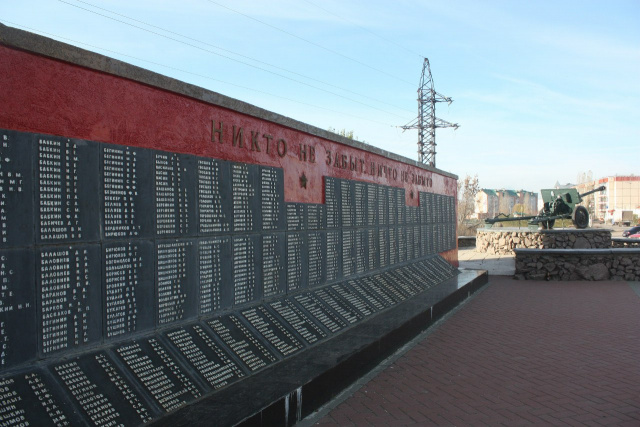
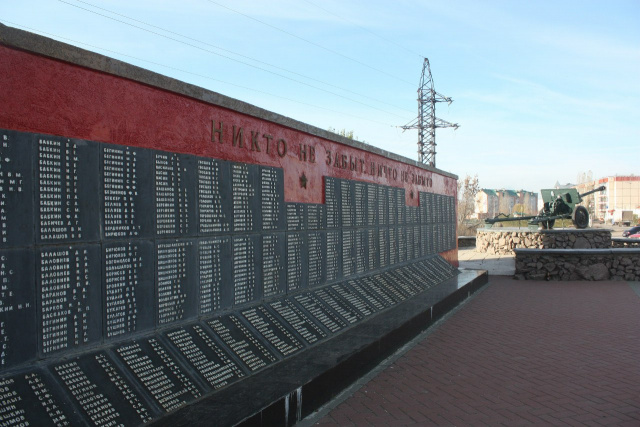

Места нашей области, посвящённые Великой Победе
 Домой
Домой
Мемориальный комплекс в честь воинов-земляков (Данков)
Мемориальный комплекс открыт в 1985 году к 40-летию Победы в Великой Отечественной войне с целью увековечения памяти погибших жителей Данкова. Проект был разработан проектно-конструкторским отделом НЛМК. Автор проекта – Лебедев Лев Николаевич, инженер по эстетике НЛМК. Возведением мемориала руководил начальник СУ-8 Е. А. Ломов. Торжественное открытие мемориала состоялось 9 мая 1985 года. В тот день сюда доставили пламя, зажженное от Вечного огня на площади Героев областного центра. Почетное право зажечь Вечный огонь было предоставлено Герою Советского Союза Николаю Ивановичу Краснову.
Центральное место в композиции мемориала занимает высокая стела, к которой с одной стороны примыкает плита с надписью: «1941–1945», а с другой – монументальная доска из чугунных плит с фамилиями 771 жителя Данкова, павшего в боях за Родину. Фасад стелы украшает многократно увеличенная копия ордена Отечественной войны. У подножия стелы возведена чаша Вечного огня в виде звезды. Правая сторона мемориала завершается круглым бастионом, на котором размещено противотанковое орудие ЗИС-3. Пушка была привезена в Данков из воинской части.
Изображения:
 
